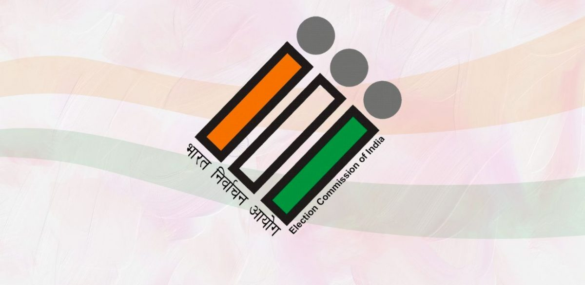

"Election Commission of India"
The Election Commission of India is an autonomous constitutional authority established on 25th January 1950 and headquartered in New Delhi. It is tasked with administering election processes across India at both national and state levels, including the Lok Sabha and Rajya Sabha elections, as well as the elections for State Legislative Assemblies and Legislative Councils. Additionally, the Commission is responsible for the registration and regulation of political parties in India, ensuring the integrity and smooth functioning of the democratic process.